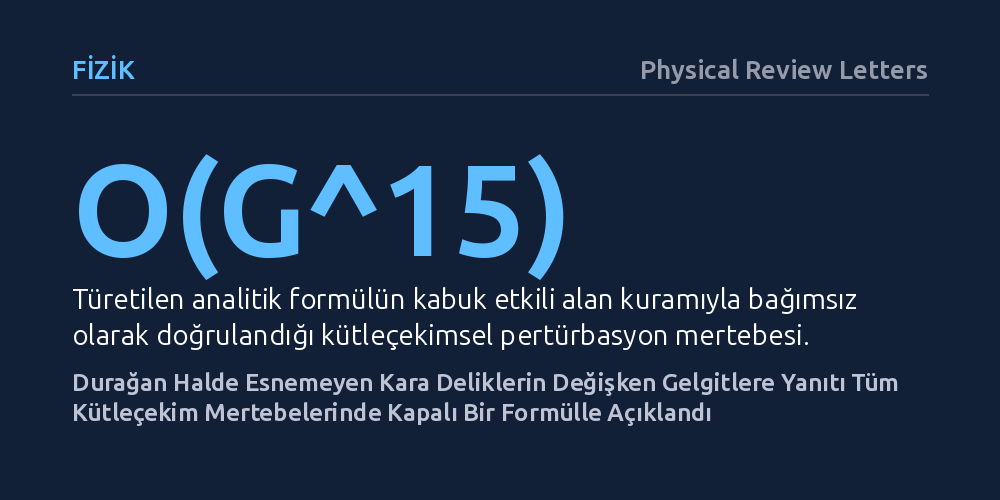

FIZIK · Physical Review Letters · 2026-10-15
Araştırmacılar, durağan halde şekil değiştirmeyen Schwarzschild kara deliklerinin zamana bağlı değişken gelgitlere nasıl tepki verdiğini inceledi. Tüm pertürbasyon türleri ve kütleçekim mertebeleri için geçerli, üç fiziksel bileşene ayrışan evrensel ve kapalı bir dinamik yanıt formülü elde edildi.
Kara deliklerin dış etkilere karşı tamamen esnemez olduğu algısını düzelterek, kütleçekim dalgası gözlemlerinde kara deliklerin dinamik yapısını anlamak için kesin bir matematiksel temel sunuyor.

Kütleçekimi dendiğinde akla ilk olarak Ay'ın Dünya'daki okyanusları kabartması gibi gelgit olayları gelir. Bir gök cisminin dışarıdan gelen bu çekim kuvvetleri karşısında ne kadar esneyip şekil değiştireceğini belirleyen katsayılara fizikte "Love sayıları" denir. Genel görelilik kuramının en şaşırtıcı öngörülerinden biri, dönmeyen durağan bir kara deliğin statik Love sayılarının tam olarak sıfır olmasıdır. Yani durağan bir çekim alanına bırakılan bir kara delik, uygulanan gelgit kuvvetine karşı kesinlikle esnemez; kusursuz küresel biçimini inatla korur.
Ne var ki gerçek evren hiçbir zaman durağan değildir. Özellikle birbirinin etrafında dönerek yaklaşan ve sonunda birleşen iki kara delik örneğinde olduğu gibi, cisimlerin maruz kaldığı çekim alanları sürekli dalgalanır ve frekansı zamanla artar. Bu tür dinamik ortamlarda kara deliklerin esneme katsayılarının sıfır kalmadığı, yani dinamik Love sayılarının var olduğu biliniyordu. Ancak bu dalgalı gelgitlere karşı kara deliğin nasıl bir matematiksel kural dahilinde tepki verdiği çözülememiş temel bir soru olarak duruyordu.
Bu sorunun yanıtlanması, kara delikleri yalnızca içine her şeyi çeken birer boşluk olarak değil, çevreleriyle etkileşime giren dinamik nesneler olarak kavramak açısından büyük önem taşımaktadır. Dışarıdan gelen dalgaların kara deliğin olay ufkunda nasıl soğurulduğunu ve uzay-zamanın bu etkileşime nasıl karşılık verdiğini anlamak, kütleçekim dalgaları çağında kuramsal fiziğin en temel hedeflerinden biridir.
Fizikçiler, dönmeyen bir Schwarzschild kara deliğinin dinamik gelgit tepkisini bulmak için kuantum alan kuramı ve istatistiksel fizikten iyi bilinen "yeniden normalizasyon grubu" yöntemini kullandı. Bu matematiksel yaklaşım, bir fiziksel sistemin davranışının farklı uzaklık ve enerji ölçeklerinde nasıl bir akış gösterdiğini adım adım izlemeyi mümkün kıldı. Kara deliğin hemen yanı başındaki olay ufku ile çok uzaktaki asimptotik bölge arasındaki ölçek geçişleri tek bir matematiksel yapıda birleştirildi.
Türetilen formülün doğruluğunu test etmek için araştırmacılar bağımsız bir yöntem olan "kabuk etkili alan kuramı" modelini devreye soktu. Bu modelleme çerçevesinde kara deliğe yönelen skaler alanlar, elektromanyetik dalgalar ve uzay-zamanın kendi dalgalanmaları olan kütleçekimsel pertürbasyonlar ayrı ayrı hesaplandı. Newton'ın çekim sabitinin 15. kuvvetine (G^15) kadar uzanan son derece yüksek bir pertürbasyon mertebesinde bağımsız doğrulama gerçekleştirilerek analitik sonucun kusursuz çalıştığı gösterildi.
Araştırmanın temel bulgusu, bir Schwarzschild kara deliğinin dinamik gelgit tepkisini tüm kütleçekim mertebelerinde (G), tüm spin durumlarında ve tüm açısal dağılım (multipol) derecelerinde eksiksiz olarak veren genel ve kapalı bir formülün elde edilmesidir. Bu formül, daha önce her bir kütleçekim mertebesi için ayrı ayrı ve devasa hesaplamalar gerektiren karmaşık yapıyı, şemadan bağımsız tek bir analitik denklemde toplamaktadır.
Elde edilen denklem, dinamik tepkinin fiziksel olarak birbirinden net biçimde ayrılan üç bileşenin birleşimi olduğunu ortaya koydu: Olay ufkunun dalgaları soğurma gücü, kara deliğe yakın bölgedeki ölçeklenme akış hızı ve uzak bölgedeki çekim potansiyelinden ileri gelen giydirilmiş logaritmik etki. Dahası araştırmacılar, formülde beliren Riemann zeta değerleri dizisinin aslında "Newton fazının gizlenmiş bir biçimi" olduğunu ve tüm dalga türleri için evrensel bir nitelik taşıdığını gösterdi.
Bu çalışma, kara deliklerin dış gelgitlere karşı mutlak biçimde tepkisiz olduğu yönündeki yaygın algıyı net bir ayrımla düzeltmektedir. Kara delikler durağan gelgitlerde esnemeseler de, değişken gelgitler karşısında evrensel kurallara bağlı ve kesin olarak hesaplanabilen bir dinamik esneklik sergilerler. Bu durum, genel görelilik kuramının zengin iç yapısını ve sınırlarını daha derinlemesine kavramamıza imkan tanımaktadır.
Pratik açıdan ise bu kapalı formül, LIGO, Virgo ve geleceğin uzay tabanlı gözlemevi LISA gibi kütleçekim dalgası dedektörlerinden elde edilen verilerin analizinde yeni bir kesinlik düzeyi sağlayabilir. Birbirinin etrafında dönerek çarpışmaya yaklaşan kara deliklerin yaydığı kütleçekim dalgalarındaki ince faz değişimleri incelenirken, dinamik gelgit etkileri artık yaklaşık tahminlerle değil, tüm mertebeleri kapsayan bu kesin matematiksel ifadeyle modellenebilecektir.